TL;DR: BIFE is a semi-AR block diffusion framework equipped with semantic sparse KV caching, block forcing, and noise scheduling. Furthermore, InterVBench is a fine-grained benchmark for minute-long videos with dedicated metrics to evaluate long-range coherence.
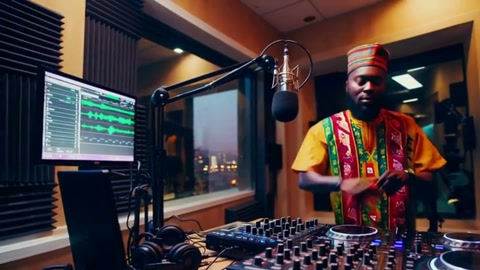
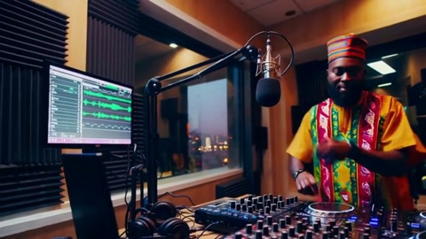
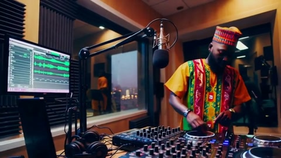
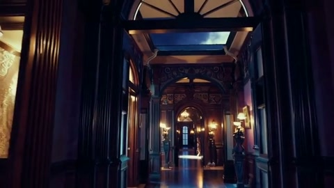
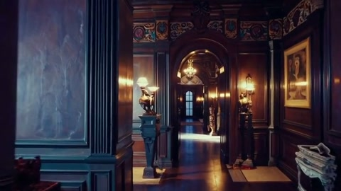
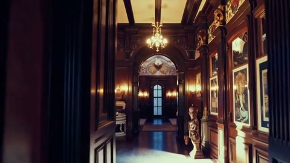
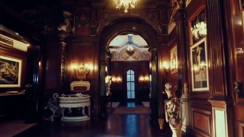
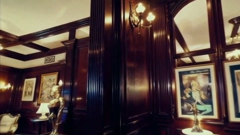
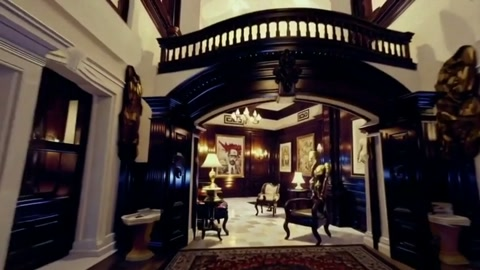
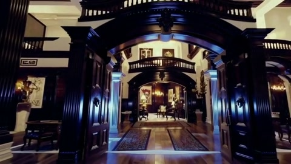
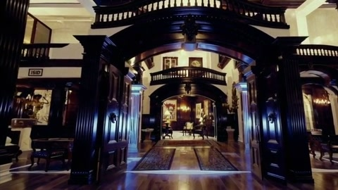
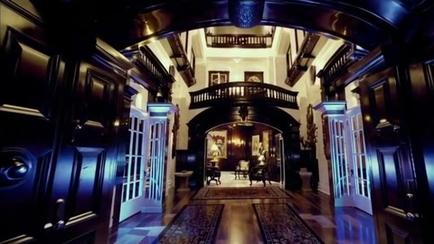
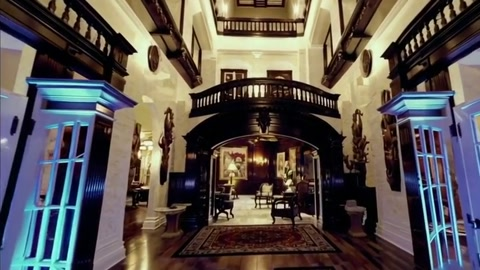
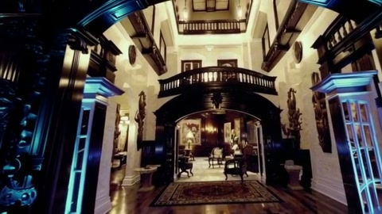
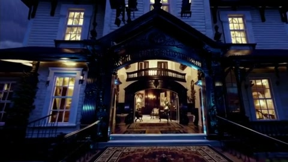
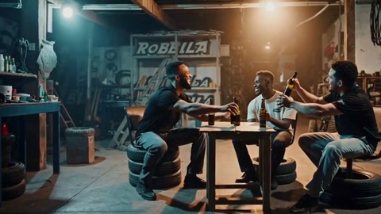
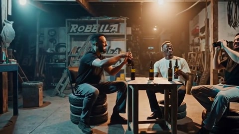
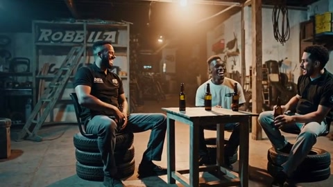
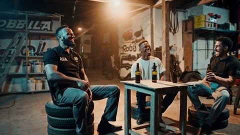
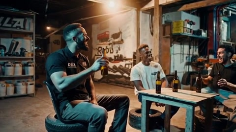
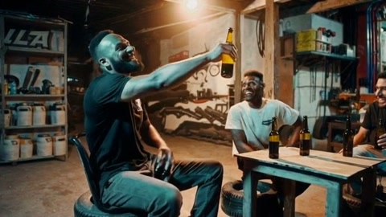
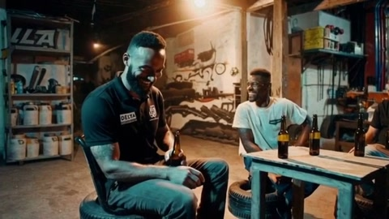
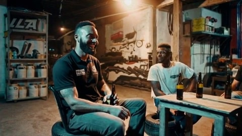
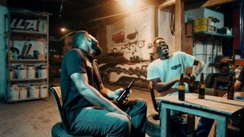
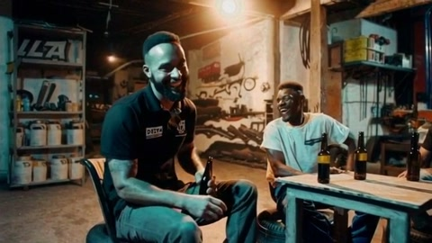
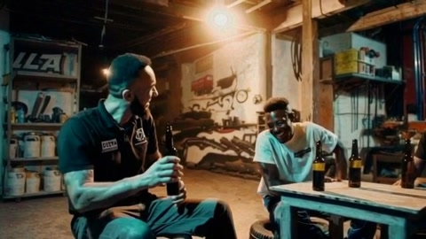
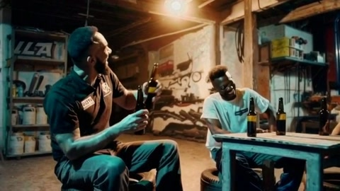
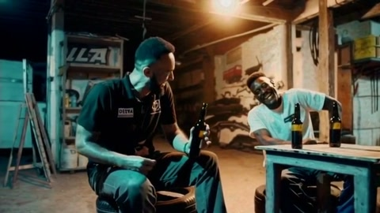
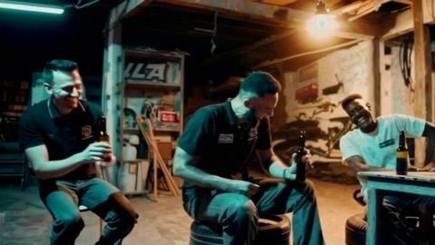
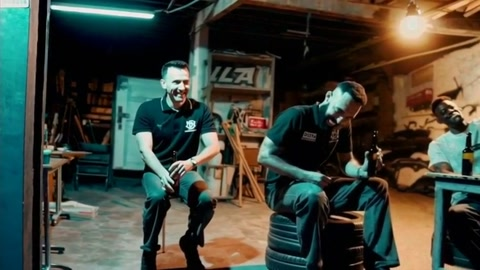
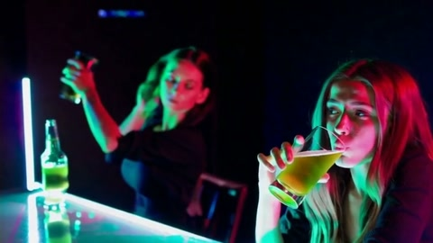
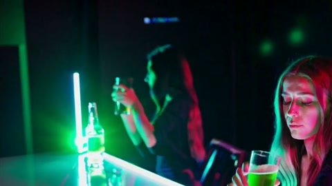
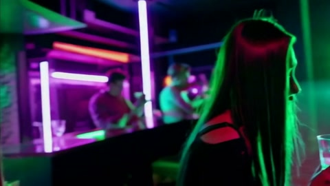
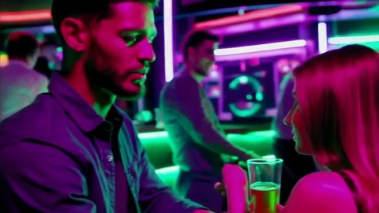
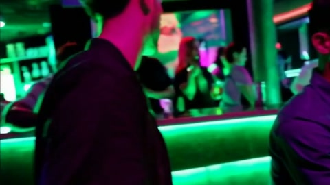
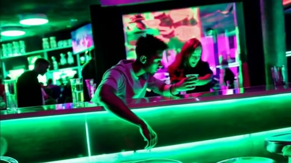
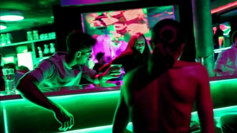
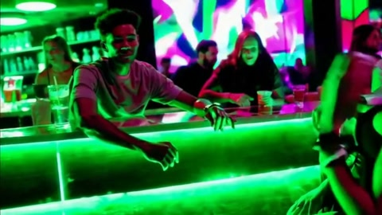
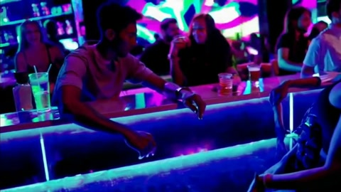
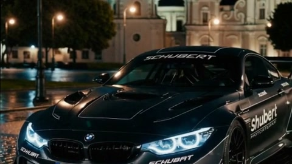
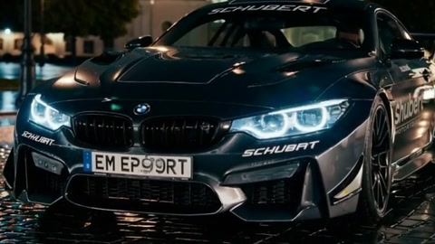
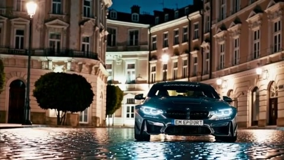
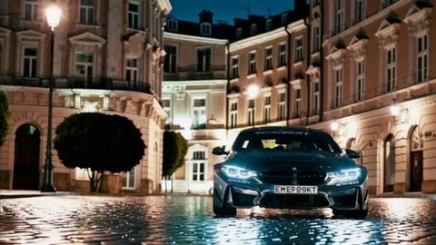
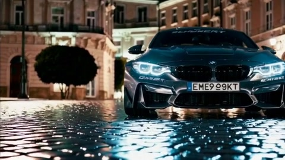
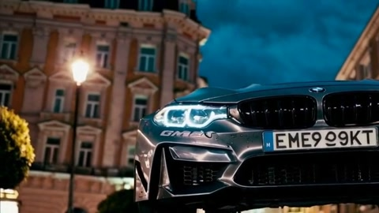
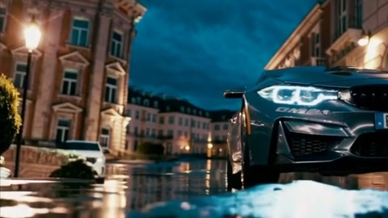
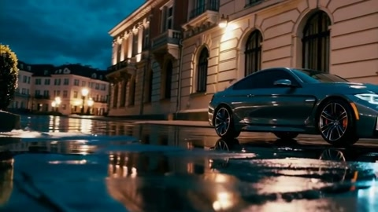
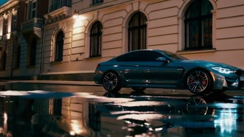
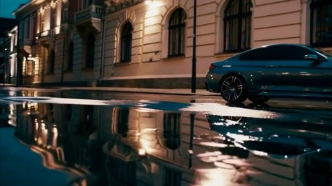
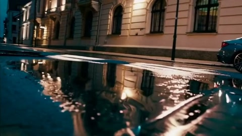
Dataset: To tackle the challenge of minute-long video generation, we curate a dataset of 1000 videos from diverse open-source sources and annotate them in detail. We collect high-quality video chunks with lengths of at least 50 seconds from DanceTrack, GOT-10k, HD-VILA-100M, and ShareGPT4V. To obtain high-quality annotations, we employ GPT-4o as a data engine to generate fine-grained captions for every 2–3 seconds in each video. Human-in-the-loop validation consists of manual visual checks at every stage of data production, including data sourcing, chunk splitting, and captioning, to ensure high-quality annotations. In the data sourcing stage, human annotators select high-quality videos and determine whether each raw video is suitable for inclusion. In the chunk splitting stage, human annotators examine samples to verify that each chunk is free from errors such as incorrect transitions. In the captioning stage, human annotators review the generated descriptions to ensure semantic accuracy and coherence. At each stage, at least two human annotators participate to provide inter-rater reliability. We then randomly divided InterVBench into an 8:2 split for training and evaluation.
| Dataset | Video Number | Object Classes |
|---|---|---|
| DanceTrack | 66 | H (66, 100%) |
| GOT-10k | 272 | H (177, 65%) A (54, 20%) E (41, 15%) |
| HD-VILA-100M | 117 | H (47, 40%) A (35, 30%) E (35, 30%) |
| ShareGPT4V | 545 | H (381, 70%) A (82, 15%) E (82, 15%) |
| InterVBench | 1000 | H (671, 67%) A (171, 17%) E (158, 16%) |
Metrics: Drift penalties have been widely adopted to address information dilution and degradation in long video generation. For example, IP-FVR focuses on preserving identity consistency, while MoCA employs an identity perceptual loss to penalize frame-to-frame identity drift. Inspired by the Mean Absolute Percentage Error (MAPE) and Weighted Mean Absolute Percentage Error (WMAPE), we propose a new metric called Video Drift Error (VDE) to measure changes in video quality. We further design 5 long video generation metrics based on VDE. The core idea involves dividing a long video into multiple smaller segments, each evaluated according to specific quality metrics (such as clarity, motion smoothness, etc). Specifically, (1) VDE Clarity measures temporal drift in image sharpness, where creeping blur increases the score, while a low value indicates stable clarity over time. (2) VDE Motion measures drift in motion smoothness, where a low score indicates consistent dynamics without jitter or freezing. (3) VDE Aesthetic measures drift in visual appeal, where a low score indicates sustained and coherent aesthetics over time. (4) VDE Background measures background stability, where a low score indicates a consistent setting without drift or flicker over time. (5) VDE Subject tracks identity drift, where a low score indicates the subject remains consistently recognizable over time. Following previous works, we also include five complementary metrics from VBench. The details are included in the Appendix.